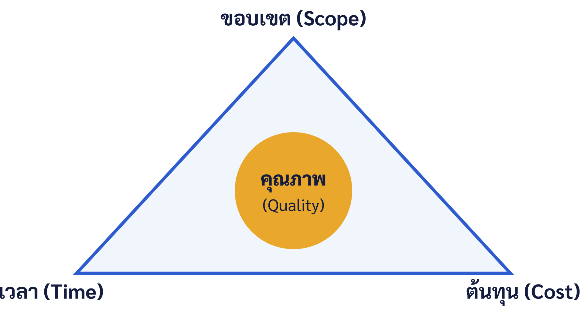

บทที่ 1 บทนำสู่การบริหารโครงการและโครงงานธุรกิจสมัยใหม่
เมื่อศึกษาบทนี้จบแล้ว นิสิตสามารถ
- อธิบายพัฒนาการทางประวัติศาสตร์ของการบริหารโครงการและบริบทที่ทำให้กลายเป็นสมรรถนะหลักได้
- อธิบายความหมายและลักษณะเฉพาะของโครงการ ตลอดจนจำแนกประเภทของโครงการตามเกณฑ์ต่าง ๆ ได้
- อธิบายความสัมพันธ์ระหว่างโครงการ โปรแกรม และแฟ้มสะสมโครงการ (Portfolio) ได้
- อธิบายความหมาย ขอบเขต และความสำคัญของการบริหารโครงการทั้งมุมมองเชิงกระบวนการและเชิงหลักการได้
- อภิปรายแนวคิดข้อจำกัดของโครงการและเกณฑ์ความสำเร็จเชิงหลายมิติได้อย่างมีวิจารณญาณ
- อธิบายบทบาท ความรู้ ทักษะ ธรรมาภิบาล และจริยธรรมของการบริหารโครงการได้
- เปรียบเทียบมาตรฐานการบริหารโครงการ และเชื่อมโยงสู่การทำโครงงานธุรกิจสมัยใหม่ในยุคดิจิทัลได้
1.1 บทนำ
โลกธุรกิจในศตวรรษที่ 21 ดำเนินอยู่ท่ามกลางสภาวะที่เรียกว่า VUCA คือ ผันผวน (Volatile) ไม่แน่นอน (Uncertain) ซับซ้อน (Complex) และคลุมเครือ (Ambiguous) องค์กรที่อยู่รอดจึงต้องแปลง "การเปลี่ยนแปลง" ให้กลายเป็นงานที่บริหารจัดการได้ และเครื่องมือหลักในการทำเช่นนั้นคือ "โครงการ"
การเปลี่ยนแปลงเชิงโครงสร้างทั้งจากเทคโนโลยีดิจิทัล พฤติกรรมผู้บริโภคที่เปลี่ยนไป การแข่งขันที่ไร้พรมแดน และความผันผวนทางเศรษฐกิจและสังคม ทำให้องค์กรต้องปรับตัวและสร้างสรรค์สิ่งใหม่อยู่เสมอ ไม่ว่าจะเป็นผลิตภัณฑ์ บริการ กระบวนการทำงาน หรือรูปแบบธุรกิจ (Business Model) ใหม่ ๆ (Osterwalder & Pigneur, 2010) การสร้างสรรค์สิ่งใหม่เหล่านี้โดยธรรมชาติมิได้เกิดจากงานประจำที่ทำซ้ำ แต่เกิดขึ้นในรูปของ "โครงการ" ซึ่งเป็นการระดมทรัพยากรและความพยายามชั่วคราวเพื่อบรรลุเป้าหมายเฉพาะภายในกรอบเวลาและงบประมาณที่จำกัด
ในระดับมหภาค นักวิชาการใช้คำว่า "เศรษฐกิจแบบโครงการ" (Project Economy) เพื่อสื่อว่าสัดส่วนของงานที่ดำเนินในรูปโครงการเพิ่มขึ้นอย่างต่อเนื่อง องค์กรจำนวนมากสร้างคุณค่าและขับเคลื่อนกลยุทธ์ผ่านชุดของโครงการมากกว่าการพึ่งงานประจำเพียงอย่างเดียว ด้วยเหตุนี้ ความสามารถในการบริหารโครงการให้สำเร็จจึงกลายเป็นสมรรถนะหลัก (Core Competency) ขององค์กรและบุคลากรยุคใหม่ เพราะเป็นกลไกเชื่อม "กลยุทธ์" ขององค์กรเข้ากับ "การลงมือปฏิบัติ" ให้เกิดผลจริง (Kerzner, 2022) และการมองโครงการเป็นเครื่องมือสร้างการเติบโตและนวัตกรรมยังช่วยให้องค์กรตอบสนองการเปลี่ยนแปลงได้อย่างเป็นระบบ (Shenhar & Dvir, 2007)
รายวิชา 0903468 โครงงานพิเศษธุรกิจสมัยใหม่ มุ่งให้ผู้เรียนได้เรียนรู้หลักการบริหารโครงการควบคู่กับการลงมือปฏิบัติจริงผ่านการจัดทำโครงงานธุรกิจสมัยใหม่ บทที่ 1 นี้จึงทำหน้าที่ปูพื้นฐานความเข้าใจเกี่ยวกับที่มา ธรรมชาติ ขอบเขต และมิติเชิงวิพากษ์ของการบริหารโครงการ อันเป็นรากฐานสำหรับเนื้อหาในบทต่อ ๆ ไปทั้งเล่ม
1.2 ประวัติและวิวัฒนาการของการบริหารโครงการ
แม้มนุษย์จะดำเนินโครงการขนาดใหญ่มาตั้งแต่ยุคโบราณ เช่น การก่อสร้างสิ่งมหัศจรรย์ของโลก แต่การบริหารโครงการในฐานะ "ศาสตร์ที่เป็นระบบ" เพิ่งพัฒนาขึ้นในศตวรรษที่ 20 การเข้าใจพัฒนาการนี้ช่วยให้ผู้เรียนเห็นว่าเครื่องมือและแนวคิดต่าง ๆ ในเล่มนี้เกิดขึ้นเพื่อแก้ปัญหาใดในแต่ละยุค
1.2.1 ยุคเครื่องมือวางแผน (ต้นศตวรรษที่ 20)
ช่วงต้นศตวรรษที่ 20 Henry Gantt ได้พัฒนาแผนภูมิแสดงกำหนดการของงานตามเวลา ซึ่งต่อมารู้จักในชื่อ "แผนภูมิแกนต์" (Gantt Chart) นับเป็นก้าวสำคัญที่ทำให้การวางแผนและติดตามงานเป็นรูปธรรมและมองเห็นได้ (Larson & Gray, 2021)
1.2.2 ยุคเทคนิคเครือข่ายงาน (ทศวรรษ 1950)
ในทศวรรษ 1950 เกิดเทคนิคการวางแผนเครือข่ายงานที่สำคัญสองวิธี ได้แก่ วิธีวิถีวิกฤต (Critical Path Method: CPM) ที่พัฒนาในภาคอุตสาหกรรม และเทคนิคทบทวนและประเมินผลโครงการ (Program Evaluation and Review Technique: PERT) ที่พัฒนาในโครงการขนาดใหญ่ของภาครัฐ เทคนิคเหล่านี้ทำให้สามารถวิเคราะห์ลำดับงาน ระยะเวลา และวิถีวิกฤตของโครงการที่ซับซ้อนได้อย่างเป็นระบบ (รายละเอียดในบทที่ 7) (Kerzner, 2022)
1.2.3 ยุคสถาบันวิชาชีพและองค์ความรู้มาตรฐาน (1969 เป็นต้นมา)
การก่อตั้งสถาบันบริหารโครงการ (Project Management Institute: PMI) ในปี ค.ศ. 1969 และการจัดทำคู่มือองค์ความรู้ PMBOK Guide ในเวลาต่อมา ช่วยหลอมรวมแนวปฏิบัติให้เป็นมาตรฐานสากลและสร้างวิชาชีพการบริหารโครงการที่ได้รับการยอมรับทั่วโลก (PMI, 2017)
1.2.4 ยุคความคล่องตัวและอิงหลักการ (2001 เป็นต้นมา)
ความไม่แน่นอนที่สูงขึ้น โดยเฉพาะในอุตสาหกรรมซอฟต์แวร์ นำไปสู่การประกาศ Agile Manifesto ในปี ค.ศ. 2001 ที่เน้นการทำงานเป็นรอบสั้น การส่งมอบคุณค่าเร็ว และการปรับตัวต่อการเปลี่ยนแปลง (Beck et al., 2001) ต่อมา PMBOK Guide ฉบับที่ 7 (ค.ศ. 2021) ได้ปรับกระบวนทัศน์จาก "อิงกระบวนการ" มาเป็น "อิงหลักการ" เพื่อให้ครอบคลุมทั้งแนวทางดั้งเดิมและแบบปรับตัว สะท้อนว่าศาสตร์นี้ยังคงวิวัฒน์ต่อเนื่องตามบริบทของโลก (PMI, 2021)
1.3 ความหมายของโครงการ
นักวิชาการและองค์กรวิชาชีพได้ให้นิยาม "โครงการ" ไว้หลากหลาย แต่มีแก่นสอดคล้องกัน ดังสรุปในตารางที่ 1.1
ตารางที่ 1.1 นิยาม "โครงการ" จากแหล่งอ้างอิงสำคัญ
| แหล่งอ้างอิง | สาระสำคัญของนิยาม |
|---|---|
| PMI (2021) | ความพยายามชั่วคราว (temporary endeavor) ที่ดำเนินการเพื่อสร้างผลิตภัณฑ์ บริการ หรือผลลัพธ์ที่มีลักษณะเฉพาะตัว (unique) |
| ISO 21502 (ISO, 2020) | ชุดกิจกรรมชั่วคราวที่ดำเนินการเพื่อบรรลุวัตถุประสงค์ตามที่กำหนด ภายใต้ข้อจำกัดที่ตกลงกัน |
| Kerzner (2022) | ชุดของกิจกรรมและงานที่มีวัตถุประสงค์เฉพาะ มีจุดเริ่มต้น-สิ้นสุด มีงบประมาณจำกัด และใช้ทรัพยากรหลายด้าน |
| วิสูตร จิระดำเกิง (2560) | ชุดกิจกรรมที่สัมพันธ์กัน มีจุดเริ่มต้นและจุดสิ้นสุดชัดเจน มุ่งบรรลุวัตถุประสงค์เฉพาะภายใต้ข้อจำกัดของทรัพยากร |
เมื่อสังเคราะห์จากนิยามข้างต้น ในตำราเล่มนี้กำหนดความหมายเชิงปฏิบัติว่า โครงการ หมายถึง ความพยายามที่มีลักษณะชั่วคราว ดำเนินการอย่างมีระบบเพื่อสร้างผลลัพธ์ที่มีลักษณะเฉพาะตัวให้บรรลุวัตถุประสงค์ที่กำหนด ภายใต้ข้อจำกัดด้านขอบเขต เวลา ต้นทุน และคุณภาพ โดยอาศัยการประสานทรัพยากรและบุคลากรที่เกี่ยวข้อง
คำว่า "ชั่วคราว" (temporary) มิได้หมายความว่าโครงการต้องสั้นหรือมีอายุน้อย แต่หมายถึงการมี "จุดสิ้นสุดที่แน่นอน" เมื่อบรรลุวัตถุประสงค์ เมื่อวัตถุประสงค์ไม่สามารถบรรลุได้ หรือเมื่อความจำเป็นของโครงการหมดไป ส่วนคำว่า "เฉพาะตัว" (unique) หมายถึงผลลัพธ์ที่มีความแตกต่างจากสิ่งที่เคยมีมาก่อนอย่างน้อยในบางมิติ แม้โครงการที่คล้ายกันก็ยังต่างกันที่บริบท ผู้เกี่ยวข้อง หรือเงื่อนไข (PMI, 2021) คำนิยามนี้ครอบคลุมทั้งโครงการขนาดใหญ่ เช่น การพัฒนาระบบสารสนเทศองค์กร และโครงการขนาดเล็ก เช่น โครงงานพัฒนาผลิตภัณฑ์ของนิสิต
1.4 ลักษณะเฉพาะของโครงการ
โครงการมีลักษณะเฉพาะที่แตกต่างจากกิจกรรมทั่วไป 5 ประการ ซึ่งผู้บริหารต้องเข้าใจเพื่อวางแผนและควบคุมงานได้อย่างเหมาะสม (Larson & Gray, 2021)
1.4.1 ความเป็นชั่วคราว (Temporary)
โครงการมีจุดเริ่มต้นและจุดสิ้นสุดที่ชัดเจน องค์กรจึงต้องจัดตั้งทีมเฉพาะกิจ จัดสรรทรัพยากรตามช่วงเวลา และวางแผนการยุบทีม/ส่งมอบงานเมื่อจบ ต่างจากงานประจำที่ดำเนินต่อเนื่องไม่มีกำหนดสิ้นสุด ตัวอย่าง: ทีมพัฒนาแอปมีกำหนดส่งภายในหนึ่งภาคการศึกษา เมื่อส่งมอบแล้วทีมก็ยุบ แต่ตัวแอปยังถูกใช้งานต่อในรูปงานประจำ
1.4.2 การสร้างผลลัพธ์ที่มีลักษณะเฉพาะตัว (Unique)
ผลลัพธ์ของโครงการไม่ใช่การผลิตซ้ำสิ่งเดิมทุกประการ ความเฉพาะตัวนี้เองที่ทำให้โครงการมีความไม่แน่นอนและต้องอาศัยการวางแผนเฉพาะกรณี มากกว่าการทำตามคู่มือมาตรฐานเพียงอย่างเดียว
1.4.3 การพัฒนาแบบค่อยเป็นค่อยไป (Progressive Elaboration)
รายละเอียดของโครงการชัดเจนขึ้นเรื่อย ๆ ตามความก้าวหน้าและข้อมูลที่เพิ่มขึ้น ในระยะเริ่มต้นมักมีเพียงแนวคิดกว้าง ๆ แล้วจึงถูกทำให้ละเอียดและแม่นยำขึ้น ลักษณะนี้ทำให้การวางแผนเป็นกระบวนการที่ต้องทบทวนและปรับปรุงอย่างต่อเนื่อง (rolling wave planning) (PMI, 2021)
1.4.4 การมีข้อจำกัดที่ต้องบริหารให้สมดุล
ทุกโครงการดำเนินภายใต้ข้อจำกัด โดยเฉพาะขอบเขต เวลา และต้นทุน การเปลี่ยนแปลงด้านหนึ่งย่อมส่งผลต่อด้านอื่น (ดูรายละเอียดในหัวข้อ 1.10) ผู้บริหารจึงต้องบริหารการแลกได้แลกเสีย (trade-off) อย่างมีสติ
1.4.5 การมีความไม่แน่นอนและความเสี่ยง
เพราะมุ่งสร้างสิ่งใหม่ โครงการจึงมีความไม่แน่นอนและความเสี่ยงสูงกว่างานประจำ การบริหารความเสี่ยงจึงเป็นองค์ประกอบที่ขาดไม่ได้ และความเสี่ยงมักสูงสุดในช่วงต้นของโครงการซึ่งเป็นช่วงที่ข้อมูลยังน้อยที่สุด
1.5 ประเภทของโครงการ
การจำแนกประเภทช่วยให้เลือกแนวทางและเครื่องมือบริหารที่เหมาะสม โครงการอาจจำแนกได้หลายแบบ เช่น จำแนกตามวัตถุประสงค์ (เชิงพาณิชย์ วิจัยและพัฒนา เพื่อสังคม) ตามขนาดและความซับซ้อน (เล็ก กลาง ใหญ่) และตามสาขางาน (การตลาด การผลิต เทคโนโลยีสารสนเทศ ฯลฯ)
1.5.1 การจำแนกด้วยโมเดล Diamond (NTCP)
Shenhar และ Dvir เสนอว่าการบริหาร "โครงการทุกโครงการเหมือนกันหมด" เป็นความเข้าใจผิดที่นำไปสู่ความล้มเหลว จึงเสนอกรอบจำแนกโครงการ 4 มิติ เรียกว่าโมเดล Diamond เพื่อเลือกวิธีบริหารให้เหมาะกับลักษณะโครงการ (Shenhar & Dvir, 2007) ดังตารางที่ 1.2
ตารางที่ 1.2 มิติของโครงการตามโมเดล Diamond (NTCP)
| มิติ | คำถามหลัก | ผลต่อการบริหาร |
|---|---|---|
| Novelty (ความใหม่) | ผลิตภัณฑ์ใหม่ต่อตลาดแค่ไหน | ยิ่งใหม่ ยิ่งต้องทดสอบตลาดและปรับความต้องการบ่อย |
| Technology (เทคโนโลยี) | ใช้เทคโนโลยีที่คุ้นเคยหรือล้ำสมัย | ยิ่งล้ำ ยิ่งต้องทดสอบและออกแบบซ้ำหลายรอบ |
| Complexity (ความซับซ้อน) | ระบบย่อยและผู้เกี่ยวข้องมากเพียงใด | ยิ่งซับซ้อน ยิ่งต้องการการประสานงานเป็นทางการ |
| Pace (ความเร่งด่วน) | กรอบเวลาตึงและวิกฤตแค่ไหน | ยิ่งเร่ง ยิ่งต้องตัดสินใจเร็วและมอบอำนาจ |
สำหรับโครงงานธุรกิจสมัยใหม่ในรายวิชานี้ มักเป็นโครงการเชิงพาณิชย์หรือพัฒนานวัตกรรมขนาดเล็กถึงกลางที่มีความใหม่ระดับปานกลาง เทคโนโลยีที่หาได้ทั่วไป และกรอบเวลาหนึ่งภาคการศึกษา การรู้ตำแหน่งของโครงงานบนมิติเหล่านี้ช่วยให้ทีมเลือกวิธีทำงานได้เหมาะสม
1.6 โครงการ โปรแกรม และแฟ้มสะสมโครงการ
ในองค์กรจริง โครงการมักไม่ได้ดำเนินอยู่โดดเดี่ยว แต่จัดกลุ่มกันเป็นลำดับชั้นเพื่อให้สอดคล้องกับกลยุทธ์ ผู้เรียนควรเข้าใจความต่างของสามระดับนี้ (PMI, 2021)
- โครงการ (Project): ความพยายามชั่วคราวเพื่อสร้างผลลัพธ์เฉพาะหนึ่งอย่าง
- โปรแกรม (Program): กลุ่มของโครงการที่สัมพันธ์กันและบริหารร่วมกันเพื่อให้ได้ประโยชน์ (Benefits) ที่มากกว่าการบริหารแยกเป็นโครงการเดี่ยว
- แฟ้มสะสมโครงการ (Portfolio): ชุดของโครงการ โปรแกรม และงานที่เลือกลงทุนร่วมกันเพื่อบรรลุวัตถุประสงค์เชิงกลยุทธ์ขององค์กร (การคัดเลือกและจัดลำดับอยู่ในบทที่ 4)
มาตรฐานสากลอย่าง ISO 21502 จัดการบริหารโครงการไว้ภายใต้บริบทของการบริหารโครงการ โปรแกรม และพอร์ตโฟลิโอที่เชื่อมโยงกัน สะท้อนว่าการบริหารโครงการที่ดีต้องเชื่อมกับกลยุทธ์ระดับองค์กร ไม่ใช่มองเพียงงานเฉพาะหน้า (Kerzner, 2022)
1.7 ความแตกต่างและความสัมพันธ์ระหว่างงานประจำกับโครงการ
งานประจำ (Operation) เป็นงานที่ดำเนินต่อเนื่องและทำซ้ำเพื่อรักษาการดำเนินธุรกิจ เช่น การผลิตประจำวัน การบริการลูกค้า การบันทึกบัญชี ขณะที่โครงการเป็นงานชั่วคราวที่มุ่งสร้างสิ่งใหม่และสิ้นสุดเมื่อบรรลุเป้าหมาย ทั้งสองสัมพันธ์กันอย่างใกล้ชิด กล่าวคือ ผลลัพธ์ของโครงการมักถูก "ส่งมอบเข้าสู่งานประจำ" (transition to operations) เพื่อสร้างคุณค่าต่อเนื่อง และในทางกลับกัน ปัญหาจากงานประจำก็มักเป็นจุดกำเนิดของโครงการใหม่ (PMI, 2021)
ตารางที่ 1.3 เปรียบเทียบงานประจำกับโครงการ
| ประเด็น | งานประจำ (Operation) | โครงการ (Project) |
|---|---|---|
| ระยะเวลา | ต่อเนื่อง ไม่มีกำหนดสิ้นสุด | ชั่วคราว มีจุดเริ่มต้น-สิ้นสุด |
| ลักษณะงาน | ทำซ้ำ สม่ำเสมอ | สร้างสิ่งใหม่ เฉพาะตัว |
| เป้าหมาย | รักษาประสิทธิภาพการดำเนินงาน | บรรลุผลลัพธ์เฉพาะ |
| ระดับความเสี่ยง | ค่อนข้างต่ำ คาดการณ์ได้ | ค่อนข้างสูง ไม่แน่นอน |
| โครงสร้างทีม | ถาวรตามสายงาน | เฉพาะกิจ ยุบเมื่อจบ |
| การวัดผล | ผลผลิต/ประสิทธิภาพ | ขอบเขต เวลา ต้นทุน คุณภาพ และคุณค่า |
1.8 ความหมายและขอบเขตของการบริหารโครงการ
การบริหารโครงการ (Project Management) คือ การประยุกต์ความรู้ ทักษะ เครื่องมือ และเทคนิคเข้ากับกิจกรรมของโครงการ เพื่อให้บรรลุข้อกำหนดและวัตถุประสงค์ (PMI, 2021) ขอบเขตของงานจึงมิได้จำกัดเพียงการวางแผนตารางเวลา แต่รวมถึงการนำทีม การประสานงานกับผู้มีส่วนได้ส่วนเสีย และการตัดสินใจภายใต้ความไม่แน่นอน ทำให้การบริหารโครงการเป็นทั้ง "ศาสตร์" (หลักการ เครื่องมือ) และ "ศิลป์" (ภาวะผู้นำ การสื่อสาร)
1.8.1 มุมมองเชิงกระบวนการ: กลุ่มกระบวนการ 5 กลุ่ม
ในเชิงกระบวนการ การบริหารโครงการดำเนินผ่านกลุ่มกระบวนการ 5 กลุ่มที่ทำงานคาบเกี่ยวและวนซ้ำได้ ได้แก่ การริเริ่ม การวางแผน การดำเนินการ การติดตามและควบคุม และการปิดโครงการ ซึ่งเป็นแนวทางที่นำเสนออย่างเป็นระบบใน PMBOK Guide ฉบับที่ 6 (PMI, 2017) (รายละเอียดในบทที่ 2)
1.8.2 มุมมองเชิงหลักการ: PMBOK ฉบับที่ 7
PMBOK Guide ฉบับที่ 7 ปรับกระบวนทัศน์เป็น "อิงหลักการ" (principles-based) โดยเสนอหลักการบริหารโครงการ 12 ข้อ และโดเมนการดำเนินงาน (performance domains) 8 ด้าน เพื่อให้ยืดหยุ่นและครอบคลุมทั้งแนวทางแบบทำนายได้ (predictive) และแบบปรับตัว (adaptive/Agile) มาตรฐานสากล ISO 21502:2020 ก็ให้แนวทางในลักษณะชุดของแนวปฏิบัติมากกว่าการกำหนดกระบวนการตายตัวเช่นกัน (PMI, 2021) ผู้เรียนจึงควรเข้าใจทั้งสองมุมมองควบคู่กัน
1.9 ความสำคัญของการบริหารโครงการต่อธุรกิจสมัยใหม่
การบริหารโครงการที่ดีสร้างคุณค่าต่อองค์กรหลายระดับ ประการแรก ช่วยให้องค์กรพัฒนานวัตกรรมและตอบสนองต่อการเปลี่ยนแปลงได้อย่างเป็นระบบ ประการที่สอง ช่วยใช้ทรัพยากรที่จำกัดอย่างคุ้มค่าและลดความสูญเปล่า ประการที่สาม ช่วยลดความเสี่ยงจากการดำเนินงานที่ไร้ทิศทางและเพิ่มโอกาสความสำเร็จของการริเริ่มใหม่ (Kerzner, 2022) ประการที่สี่ เป็นสะพานเชื่อมกลยุทธ์สู่การปฏิบัติ ทำให้เป้าหมายเชิงกลยุทธ์กลายเป็นผลลัพธ์ที่จับต้องได้ และประการสุดท้าย ทักษะการบริหารโครงการเป็นที่ต้องการของตลาดแรงงานและเป็นพื้นฐานสำคัญของการเป็นผู้ประกอบการ
ที่สำคัญ งานวิจัยชี้ว่าโครงการที่บริหารดีไม่ได้วัดกันแค่ "เสร็จตรงเวลา-ตรงงบ" แต่ต้องสร้าง "ผลลัพธ์ทางธุรกิจ" ที่แท้จริงด้วย องค์กรที่มองโครงการเป็นเครื่องมือสร้างการเติบโตจะได้เปรียบกว่าองค์กรที่มองโครงการเป็นเพียงงานด้านเทคนิค (Shenhar & Dvir, 2007)
1.10 ข้อจำกัดของโครงการและมุมมองเรื่องความสำเร็จ
1.10.1 สามเหลี่ยมข้อจำกัด (Iron Triangle)
แนวคิดสามเหลี่ยมข้อจำกัด (Triple Constraint หรือ Iron Triangle) อธิบายว่าโครงการถูกจำกัดด้วยปัจจัยสัมพันธ์กัน 3 ประการ ได้แก่ ขอบเขต (Scope) เวลา (Time) และต้นทุน (Cost) โดยมีคุณภาพ (Quality) เป็นแกนกลาง การเปลี่ยนด้านหนึ่งย่อมกระทบอีกสองด้าน (Larson & Gray, 2021)

ในการบริหารสมัยใหม่ยังขยายเป็น 6 ข้อจำกัด โดยเพิ่มคุณภาพ ความเสี่ยง และทรัพยากร เพื่อสะท้อนความซับซ้อนได้ครบถ้วนขึ้น
1.10.2 ความสำเร็จของโครงการเป็นเรื่อง "หลายมิติ"
สิ่งที่ผู้เรียนต้องเข้าใจอย่างมีวิจารณญาณคือ "เสร็จตรงเวลา ตรงงบ ตรงขอบเขต" เป็นเพียงการวัด "ประสิทธิภาพการส่งมอบ" เท่านั้น ยังไม่ใช่ความสำเร็จที่แท้จริง Atkinson เรียกเกณฑ์สามเหลี่ยมว่าเป็น "การเดาที่ดีที่สุดสองอย่าง" และเสนอให้เพิ่มมิติความสำเร็จด้านอื่น เช่น คุณภาพของระบบงาน ประโยชน์ต่อองค์กร และประโยชน์ต่อผู้มีส่วนได้ส่วนเสีย (Atkinson, 1999) สอดคล้องกับ Shenhar และ Dvir ที่เสนอว่าความสำเร็จควรวัดหลายมิติ ตั้งแต่ประสิทธิภาพการดำเนินงาน ผลต่อลูกค้า ผลทางธุรกิจ ไปจนถึงการเตรียมองค์กรสู่อนาคต (Shenhar & Dvir, 2007)
โครงงานหนึ่งพัฒนาแอปเสร็จตรงเวลาและตรงงบประมาณทุกบาท แต่เมื่อเปิดใช้กลับไม่มีผู้ใช้ เพราะไม่ได้แก้ปัญหาที่ลูกค้าต้องการจริง ตามเกณฑ์สามเหลี่ยม "สำเร็จ" แต่ตามเกณฑ์หลายมิติถือว่า "ล้มเหลว" บทเรียนคือ ต้องกำหนดเกณฑ์ความสำเร็จเชิงคุณค่าตั้งแต่ต้น ไม่ใช่วัดเพียงการส่งมอบ
1.11 ความรู้ ทักษะ และบทบาทของผู้จัดการโครงการ
ผู้จัดการโครงการ (Project Manager) รับผิดชอบการนำทีมให้บรรลุวัตถุประสงค์ บทบาทหลักครอบคลุมการวางแผน การจัดองค์กรและทีม การประสานงานกับผู้มีส่วนได้ส่วนเสีย การติดตามควบคุมงาน และการตัดสินใจแก้ปัญหา PMI เสนอกรอบสมรรถนะ "Talent Triangle" สามด้าน ได้แก่ ทักษะการบริหารโครงการเชิงเทคนิค (Technical Project Management) ภาวะผู้นำ (Leadership) และการบริหารเชิงกลยุทธ์และธุรกิจ (Strategic and Business Management) (PMI, 2021)
นอกจากความรู้เชิงเทคนิคแล้ว ผู้จัดการโครงการที่ดีต้องมีทักษะด้านมนุษยสัมพันธ์ (Soft Skills) เช่น การสื่อสาร การจูงใจ การจัดการความขัดแย้ง และการทำงานเป็นทีม งานวิจัยจำนวนมากชี้ว่าปัจจัยด้านคนและภาวะผู้นำมักเป็นตัวตัดสินความสำเร็จมากกว่าความรู้เชิงเทคนิคเพียงอย่างเดียว โดยเฉพาะในโครงงานที่ต้องอาศัยความร่วมมือของสมาชิกหลายฝ่าย (Kerzner, 2022) (รายละเอียดการบริหารทีมอยู่ในบทที่ 5)
1.12 ธรรมาภิบาลโครงการ (Project Governance)
ธรรมาภิบาลโครงการ หมายถึง กรอบของอำนาจ บทบาท และกระบวนการตัดสินใจที่กำกับให้โครงการดำเนินไปอย่างโปร่งใสและสอดคล้องกับเป้าหมายขององค์กร ธรรมาภิบาลที่ดีกำหนดว่าใครมีอำนาจอนุมัติ ใช้เกณฑ์ใดในการตัดสินใจ ณ จุดตัดสินใจ (Stage Gate) และรายงานต่อใคร ซึ่งช่วยป้องกันไม่ให้โครงการที่ไม่คุ้มค่าดำเนินต่อไปโดยไร้การตรวจสอบ (AXELOS, 2017) ในระเบียบวิธี PRINCE2 การมีกรณีทางธุรกิจ (Business Case) เป็นศูนย์กลางและการทบทวนความคุ้มค่าตลอดอายุโครงการ ถือเป็นหัวใจของธรรมาภิบาล ขณะที่มาตรฐาน ISO 21502 ก็เน้นบทบาทของผู้สนับสนุน (Sponsor) และคณะกรรมการกำกับโครงการในการดูแลภาพรวม
1.13 จริยธรรมและความยั่งยืนในการบริหารโครงการ
ผู้จัดการโครงการมืออาชีพต้องยึดหลักจริยธรรม เช่น ความรับผิดชอบ ความเคารพ ความเป็นธรรม และความซื่อสัตย์ ซึ่งเป็นแกนของจรรยาบรรณวิชาชีพที่องค์กรวิชาชีพกำหนดไว้ (PMI, 2021) นอกจากนี้ แนวคิดการบริหารโครงการสมัยใหม่ยังให้ความสำคัญกับความยั่งยืน (Sustainability) โดยพิจารณาผลกระทบทางเศรษฐกิจ สังคม และสิ่งแวดล้อมของโครงการ ไม่ใช่เพียงผลลัพธ์ทางการเงินระยะสั้น สำหรับโครงงานธุรกิจสมัยใหม่ ประเด็นด้านการคุ้มครองข้อมูลส่วนบุคคลของผู้ใช้และการใช้เทคโนโลยีอย่างมีความรับผิดชอบเป็นมิติทางจริยธรรมที่ผู้เรียนต้องคำนึงถึงตั้งแต่ออกแบบโครงงาน
1.14 ผู้มีส่วนได้ส่วนเสียของโครงการเบื้องต้น
ผู้มีส่วนได้ส่วนเสีย (Stakeholders) คือ บุคคลหรือกลุ่มที่ได้รับผลกระทบจากโครงการหรือมีอิทธิพลต่อโครงการ เช่น ผู้สนับสนุนโครงการ ลูกค้า/ผู้ใช้ ทีมงาน ผู้บริหาร คู่ค้า และชุมชน การระบุและบริหารความสัมพันธ์กับผู้มีส่วนได้ส่วนเสียตั้งแต่ระยะเริ่มต้นเป็นปัจจัยสำคัญต่อความสำเร็จ เพราะความคาดหวังที่ขัดกันของผู้มีส่วนได้ส่วนเสียเป็นแหล่งความเสี่ยงสำคัญ (PMI, 2021) หัวข้อนี้จะกล่าวถึงโดยละเอียดในบทที่ 4
1.15 มาตรฐานและแนวทางการบริหารโครงการ
ปัจจุบันมีมาตรฐานและแนวทางที่ได้รับการยอมรับหลายระบบ ซึ่งไม่ได้ขัดแย้งกันแต่เน้นคนละมุม ผู้เรียนควรเลือกประยุกต์ให้เหมาะกับบริบทของโครงงาน ดังสรุปในตารางที่ 1.4
ตารางที่ 1.4 เปรียบเทียบมาตรฐาน/แนวทางการบริหารโครงการที่สำคัญ
| แนวทาง | จุดเน้น | เหมาะกับ |
|---|---|---|
| PMBOK Guide (PMI, 2021) | กรอบองค์ความรู้/หลักการที่ครอบคลุม | โครงการทั่วไปหลากหลายสาขา |
| PRINCE2 (AXELOS, 2017) | กระบวนการและการควบคุมเป็นขั้นตอน มี business case เป็นศูนย์กลาง | องค์กรที่ต้องการธรรมาภิบาลชัดเจน |
| Agile / Scrum / Kanban (Beck et al., 2001) | ทำงานเป็นรอบสั้น ส่งมอบคุณค่าเร็ว ปรับตัวได้ | งานที่ความต้องการไม่แน่นอนสูง |
| ISO 21502 (2020) | แนวปฏิบัติระดับสากลสำหรับการบริหารโครงการ | การวางระบบบริหารโครงการระดับองค์กร |
แนวทางเหล่านี้วางตัวอยู่บนสเปกตรัมตั้งแต่ "แบบทำนายได้" (predictive) ไปจนถึง "แบบปรับตัว" (adaptive) โดยหลายโครงการในทางปฏิบัติใช้แบบผสม (hybrid) สำหรับโครงงานธุรกิจสมัยใหม่ ผู้เรียนควรยึดหลักการพื้นฐานที่เป็นสากล ได้แก่ การกำหนดเป้าหมายและขอบเขตให้ชัดเจน การวางแผนอย่างเป็นระบบ การติดตามความก้าวหน้า และการปรับปรุงอย่างต่อเนื่อง
1.16 การบริหารโครงการในยุคดิจิทัลและปัญญาประดิษฐ์
เทคโนโลยีดิจิทัลได้เปลี่ยนวิธีบริหารโครงการอย่างมีนัยสำคัญ เครื่องมือบริหารงานบนคลาวด์ช่วยให้ทีมทำงานร่วมกันแบบเรียลไทม์ (บทที่ 8) ขณะที่การวิเคราะห์ข้อมูล (Data Analytics) ช่วยให้การประมาณการและการติดตามความก้าวหน้าแม่นยำขึ้น ในระยะหลัง ปัญญาประดิษฐ์ (AI) เริ่มถูกนำมาช่วยงานบริหารโครงการ เช่น การช่วยร่างเอกสาร การสรุปการประชุม การประเมินความเสี่ยงเบื้องต้น และการช่วยวิเคราะห์ข้อมูล อย่างไรก็ตาม พึงระลึกว่า AI เป็นเพียง "ผู้ช่วย" การตัดสินใจเชิงคุณค่า การนำทีม และความรับผิดชอบทางจริยธรรมยังคงเป็นบทบาทของมนุษย์ ผู้เรียนจึงควรฝึกใช้เครื่องมือดิจิทัลและ AI อย่างมีวิจารณญาณ ควบคู่กับการเข้าใจหลักการพื้นฐานที่กล่าวในบทนี้
1.17 โครงงานธุรกิจสมัยใหม่และนวัตกรรม
โครงงานธุรกิจสมัยใหม่ หมายถึง โครงการที่มุ่งสร้างคุณค่าทางธุรกิจผ่านการพัฒนานวัตกรรม ไม่ว่าจะเป็นสินค้า บริการ กระบวนการ หรือรูปแบบธุรกิจใหม่ โดยอาศัยองค์ความรู้ด้านการจัดการและเทคโนโลยีดิจิทัล ตัวอย่างเช่น การพัฒนาแพลตฟอร์มออนไลน์ การออกแบบบริการที่ใช้ข้อมูลเป็นฐาน หรือการต่อยอดธุรกิจชุมชนด้วยช่องทางดิจิทัล ในการออกแบบรูปแบบธุรกิจ เครื่องมืออย่าง Business Model Canvas ช่วยให้ทีมมองเห็นองค์ประกอบสำคัญของธุรกิจอย่างเป็นระบบและเชื่อมโยงกันเป็นภาพเดียว (Osterwalder & Pigneur, 2010) โครงงานเหล่านี้ต้องอาศัยทั้งความคิดสร้างสรรค์ในการหาคุณค่า และการบริหารโครงการที่เป็นระบบในการทำให้คุณค่านั้นเกิดขึ้นจริงภายใต้ข้อจำกัด จึงจะประสบความสำเร็จและนำไปใช้ได้จริง
1.18 ความเชื่อมโยงกับรายวิชาและแผนการเรียนรู้
ในรายวิชา 0903468 ผู้เรียนจะนำหลักการในบทนี้ไปใช้จริงผ่านการทำโครงงานกลุ่มตลอดภาคการศึกษา ตั้งแต่การริเริ่มแนวคิด การวางแผน การดำเนินการ จนถึงการนำเสนอและส่งมอบผลงาน การเรียนรู้จึงเป็นแบบเน้นผลลัพธ์ (Outcome-Based Education) และการลงมือปฏิบัติ (Project-based Learning) ซึ่งสอดคล้องกับผลลัพธ์การเรียนรู้ระดับรายวิชา (CLOs) ที่กำหนดไว้
เนื้อหาของบทต่อ ๆ ไปจะเดินตามวงจรชีวิตของโครงการ ได้แก่ วงจรชีวิตและกระบวนการ (บทที่ 2) การริเริ่มและศึกษาความเป็นไปได้ (บทที่ 3) การวิเคราะห์ผู้มีส่วนได้ส่วนเสียและการคัดเลือกโครงการ (บทที่ 4) องค์กรและทีม (บทที่ 5) ใบอนุมัติโครงการ (บทที่ 6) ขอบเขตและ WBS (บทที่ 7) เครื่องมือดิจิทัล (บทที่ 8) งบประมาณและทรัพยากร (บทที่ 9) คุณภาพและการดำเนินงาน (บทที่ 10) การสื่อสารและการปิดโครงการ (บทที่ 11) และการจัดทำและนำเสนอโครงงาน (บทที่ 12)
กรณีศึกษา "แอปพลิเคชันสั่งอาหารสำหรับร้านค้าในมหาวิทยาลัย": ทีมนิสิตกลุ่มหนึ่งสังเกตปัญหาการรอคิวซื้ออาหารช่วงพักกลางวัน จึงริเริ่มโครงงานพัฒนาแอปสั่งอาหารล่วงหน้า
วิเคราะห์ตามแนวคิดในบทนี้: โครงงานนี้มีลักษณะของโครงการครบถ้วน คือ เป็นงานชั่วคราวที่มีกำหนดเสร็จภายในหนึ่งภาคการศึกษา (Temporary) มุ่งสร้างแอปต้นแบบเฉพาะบริบทของมหาวิทยาลัย (Unique) และพัฒนารายละเอียดชัดเจนขึ้นจากการสำรวจผู้ใช้ (Progressive Elaboration) ทีมต้องบริหารข้อจำกัดด้านเวลา งบประมาณ และขอบเขตให้สมดุล (Iron Triangle) เมื่อจำแนกด้วยโมเดล Diamond พบว่าเป็นโครงการความใหม่และเทคโนโลยีปานกลาง ความซับซ้อนต่ำ แต่กรอบเวลาตึง จึงเหมาะกับการทำงานแบบปรับตัวเป็นรอบสั้น
เมื่อพิจารณาด้วยเกณฑ์ความสำเร็จหลายมิติ (Atkinson, 1999) ทีมไม่ควรวัดแค่ "ส่งแอปทันเวลา" แต่ต้องวัด "มีผู้ใช้จริงและช่วยลดเวลารอคิว" ด้วย เมื่อส่งมอบแอปแล้ว โครงการสิ้นสุด แต่การดูแลและให้บริการแอปในแต่ละวันจะกลายเป็นงานประจำต่อไป
การบริหารโครงการพัฒนาเป็นศาสตร์ที่เป็นระบบตลอดศตวรรษที่ 20 จากเครื่องมือวางแผน (Gantt) สู่เทคนิคเครือข่ายงาน (CPM/PERT) องค์ความรู้มาตรฐาน (PMBOK) และแนวทางแบบปรับตัว (Agile) โครงการเป็นความพยายามชั่วคราวที่มุ่งสร้างผลลัพธ์เฉพาะตัวภายใต้ข้อจำกัด มีลักษณะเฉพาะ 5 ประการ และจัดกลุ่มเป็นลำดับชั้นโครงการ-โปรแกรม-พอร์ตโฟลิโอเพื่อเชื่อมกับกลยุทธ์ การบริหารโครงการมองได้ทั้งเชิงกระบวนการและเชิงหลักการ ความสำเร็จเป็นเรื่องหลายมิติที่มากกว่าการส่งมอบตรงเวลาและงบประมาณ ผู้จัดการโครงการต้องมีทั้งความรู้เชิงเทคนิค ภาวะผู้นำ การบริหารเชิงกลยุทธ์ ธรรมาภิบาล และจริยธรรม ในยุคดิจิทัลและ AI เครื่องมือช่วยเพิ่มประสิทธิภาพ แต่การตัดสินใจเชิงคุณค่ายังเป็นบทบาทของมนุษย์ ทั้งหมดนี้เป็นรากฐานสำหรับการลงมือทำโครงงานธุรกิจสมัยใหม่ในบทต่อไป
คำถามทบทวน
- อธิบายพัฒนาการของการบริหารโครงการจากยุค Gantt ถึงยุค Agile ว่าแต่ละยุคเกิดขึ้นเพื่อแก้ปัญหาใด
- จงให้นิยามของ "โครงการ" พร้อมอธิบายลักษณะเฉพาะทั้ง 5 ประการ และยกตัวอย่างประกอบแต่ละข้อ
- อธิบายความสัมพันธ์ระหว่างโครงการ โปรแกรม และพอร์ตโฟลิโอ พร้อมยกตัวอย่างในองค์กรจริง
- เปรียบเทียบความแตกต่างและความสัมพันธ์ระหว่างงานประจำกับโครงการอย่างน้อย 5 ประเด็น
- เปรียบเทียบมุมมองเชิงกระบวนการ (PMBOK 6) กับเชิงหลักการ (PMBOK 7) และผลต่อการทำงานของทีม
- อธิบายแนวคิดสามเหลี่ยมข้อจำกัด และเหตุใด Atkinson (1999) จึงเสนอว่าไม่เพียงพอต่อการวัดความสำเร็จ
- ใช้โมเดล Diamond (NTCP) วิเคราะห์โครงงานของกลุ่มท่านทั้งสี่มิติ และสรุปว่าควรบริหารอย่างไร
- PMI Talent Triangle ประกอบด้วยสมรรถนะด้านใดบ้าง และเหตุใดทักษะด้านมนุษยสัมพันธ์จึงสำคัญ
- ธรรมาภิบาลโครงการคืออะไร และช่วยป้องกันปัญหาใดในการดำเนินโครงการ
- ยกตัวอย่างประเด็นทางจริยธรรมและความยั่งยืนที่โครงงานของกลุ่มท่านต้องคำนึงถึง
- เปรียบเทียบจุดเด่นของ PMBOK, PRINCE2 และ Agile และระบุว่าโครงงานของท่านควรใช้แนวทางใดหรือแบบผสม
- AI ช่วยงานบริหารโครงการได้อย่างไร และมีข้อจำกัด/ข้อพึงระวังอะไรบ้าง
- โครงการ (Project)
- ความพยายามชั่วคราวเพื่อสร้างผลลัพธ์ที่มีลักษณะเฉพาะตัวภายใต้ข้อจำกัดที่กำหนด
- Project Economy
- สภาพที่งานสร้างคุณค่าดำเนินในรูปโครงการเพิ่มขึ้นอย่างต่อเนื่อง
- โปรแกรม / พอร์ตโฟลิโอ
- กลุ่มโครงการที่บริหารร่วมเพื่อประโยชน์ / ชุดการลงทุนที่สอดคล้องกลยุทธ์
- Progressive Elaboration
- การพัฒนารายละเอียดของโครงการให้ชัดเจนขึ้นตามความก้าวหน้า
- Iron Triangle
- สามเหลี่ยมข้อจำกัด: ขอบเขต เวลา ต้นทุน โดยมีคุณภาพเป็นแกนกลาง
- เกณฑ์ความสำเร็จหลายมิติ
- การวัดความสำเร็จที่ครอบคลุมคุณค่าต่อผู้ใช้ องค์กร และอนาคต
- โมเดล Diamond (NTCP)
- กรอบจำแนกโครงการ 4 มิติ: ความใหม่ เทคโนโลยี ความซับซ้อน ความเร่งด่วน
- PMI Talent Triangle
- สมรรถนะผู้จัดการโครงการ 3 ด้าน: เทคนิค ภาวะผู้นำ กลยุทธ์/ธุรกิจ
- ธรรมาภิบาลโครงการ
- กรอบอำนาจ บทบาท และการตัดสินใจที่กำกับโครงการให้โปร่งใสและตรงกลยุทธ์
- Predictive vs Adaptive
- สเปกตรัมแนวทางบริหารตั้งแต่วางแผนล่วงหน้าถึงแบบปรับตัว (Agile)
เอกสารอ้างอิง
แหล่งอ่านเพิ่มเติม
วราวุฒิ นาคบุญนำ. (2569). บทที่ 1 บทนำสู่การบริหารโครงการและโครงงานธุรกิจสมัยใหม่. ใน การบริหารโครงการสำหรับโครงงานธุรกิจสมัยใหม่ (ตำรารายวิชา 0903468 โครงงานพิเศษธุรกิจสมัยใหม่). คณะการบัญชีและการจัดการ มหาวิทยาลัยมหาสารคาม. https://aj-warawut.github.io/academic-web-teaching/textbook_0903468_บทที่1_เผยแพร่.html